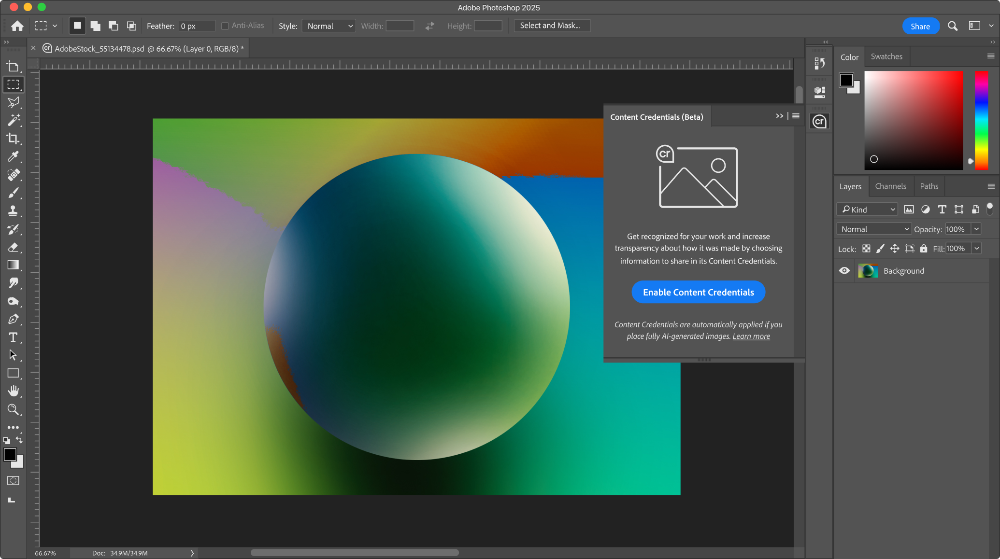
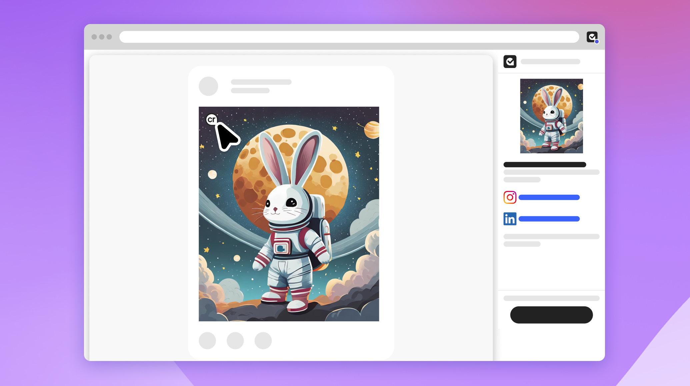

Content Credentials in Adobe tools
Oversee design and partner with teams across Adobe to bring content authenticity workflows to flagship products, including Photoshop, Lightroom, and Premiere.
Trust in digital content depends on systems people can understand. I design for content provenance, turning complex technical information into clear, usable trust signals that work across products, ecosystems, and standards.
At Adobe, I lead product design for the Content Authenticity Initiative, connecting UX, policy, and emerging technology to make content authenticity credible, accessible, and usable in everyday contexts.

Oversee design and partner with teams across Adobe to bring content authenticity workflows to flagship products, including Photoshop, Lightroom, and Premiere.

Lead design on best practices for attribution and authenticity signals in social feeds, and advise partners on their Content Credentials implementations.
Help shape the UX guidance for the Coalition for Content Provenance and Authenticity (C2PA) and Creator Assertion Working Group (CAWG), so provenance specifications translate into usable product experiences.
Created an early web experiment that turns pictures into sound, mapping color and image effects to a Web Audio synth.